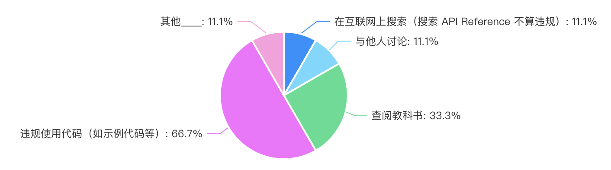
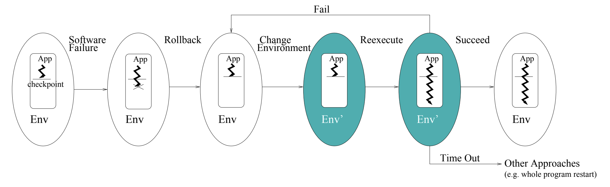

Overview
复习
- 我们理解了从系统调用 → libc → shell → 应用的 “软件栈”
本次课回答的问题
- 能不能用系统调用实现比普通业务逻辑代码更有趣的东西？
本次课主要内容
- 期中测验讲评
- 状态机复制 (fork) 的应用
- 有关 fork 的一些讨论
期中测验讲评
简答题：并发求和
如果假设 sum.c 中的 sum++ 是如下构成：
t = atomic_fetch(sum)t++atomic_store(sum, t)
那么 $k$ 个线程，输出的最小 sum 是多少？
结论有些反直觉：
对于所有 $n, k\ge 2$， sum的最小值都是 2- 只要有一个线程在最后一轮循环 “持有” 2，再保持到最后写入
- Online Judge 就送分了
水面下的冰山：“反直觉” 的来源
Verifying Sequential Consistency (VSC) is NP-Complete
- 给出若干线程的共享内存 load/store 序列，判定是否存在一个 “全局” 的读写顺序，使得线程总是读到最近写入的数值
课后习题难度 (3-SAT)
- 阶段 1: 赋值
- 对每个变量 $x$ 构造 write($x$, 0) 和 write($x$, 1) 的线程
- 阶段 2: 判定 $C_i = x \lor \neg y$
- (T1) read(x) = 1, write($S_i$, 1) (T2) read($y$) = 0, write($S_i$, 1)
- 阶段 3: 收结果
- read($S_1$) = 1, read($S_2$) = 1, ...
- 阶段 4: 收尾 (使所有线程都能顺利结束)
- write($x$, 0), write($x$, 1)
更多的技术处理
“加强豪华版课后习题” 😂
- Testing shared memories (SIAM Journal on Computing'97)
- 使用的同步机制比刚才的 “课后习题版本” 稍巧妙一些
| VSC 的变种 | 复杂度 |
|---|---|
| 刚才的证明 (一般情况) | NP-Complete |
| 每个线程只执行 2 个操作 | NP-Complete |
| 只有 2 个变量 | NP-Complete |
| 只有 3 个线程 | NP-Complete |
| 每个读知道写者 | NP-Complete |
| 每个变量只被一个线程写入 | NP-Complete |
编程题：生产者-消费者
投机取巧的方法：
void Tworker() {
while (!feof(stdin) && scanf("%d", &x) == 1) {
long res = f(x);
lock(&lk);
sum += res;
unlock(&lk);
}
}
如果限制只有一个线程可以读，那就需要生产者-消费者了
统计结果
正确率 (OJ 实时统计通过似乎只统计了编程题……)
- 简答题 56/74 (75.7%)
- 编程题 28/74 (37.8%)
87.5% (56/64) 的问卷表示 “没有出卖灵魂”
- 希望大家保持！

fork() 行为的补充解释
复习：fork()
状态机的复制
- fork-demo.c
- 操作系统：状态机的管理者
- fork-printf.c
- 一切状态都会被复制
- sh-xv6.c
- fork + execve + pipe: UNIX Shell 的经典设计
fork 状态机复制包括持有的所有操作系统对象 execve “重置” 状态机，但继承持有的所有操作系统对象
文件描述符
熟悉又陌生
int open(const char *pathname, int flags);
- RTFM:
O_CLOEXEC,O_APPEND
文件描述符：一个指向操作系统内对象的 “指针”
对象只能通过操作系统允许的方式访问 - 从 0 开始编号 (0, 1, 2 分别是 stdin, stdout, stderr)
- 可以通过 open 取得；close 释放；dup “复制”
- 对于数据文件，文件描述符会 “记住” 上次访问文件的位置
write(3, "a", 1); write(3, "b", 1);
文件描述符的 “复制”
fd = open("a.txt", O_WRONLY | O_CREAT); assert(fd > 0);
pid_t pid = fork(); assert(pid >= 0);
if (pid == 0) {
write(fd, "Hello");
} else {
write(fd, "World");
}
文件抽象的代价
- 操作系统必须正确管理好偏移量 (如果是日志文件)
- 原子性 (RTFM: write(2), BUGS section)
- dup() 的两个文件描述符是共享 offset，还是独立 offset？
- RTFM again!
复制，但又没有完全复制
概念上状态机被复制，但实际上复制后
- “Copy-on-write” 只有被写入的页面才会复制一份
- 被复制后，整个地址空间都被标记为 “只读”
- 操作系统捕获 Page Fault 后酌情复制页面
- fork-execve 效率得到提升
- 操作系统会维护每个页面的引用计数
想证明这一点？
- cow-test.c: 128MB 代码 + 128MB 数据
- 创建 1000 个进程 (2GB 内存的虚拟能抗住吗)？
- 所以，整个操作系统里 libc 代码和只读数据只有一个副本！
- 推论：
统计进程占用的内存是个伪命题
状态机、fork() 和魔法
状态机的视角
帮助我们
- 理解物理世界 (Cellular Automata)
- 理解处理器、操作系统
- 调试 (record-replay)、profiler
- Model checker 和 program verifier
fork() 可以复制状态机？
- 感觉是一个非常 “强大” 的操作
- 比如
创造平行宇宙 ！
创造平行宇宙：跳过初始化
假设你实现的 NEMU 需要启动很多份
./nemu dummy.elf./nemu add.elf./nemu add-longlong.elf...- 而你的 NEMU 实现初始化又需要很长的时间？
int main() {
nemu_init(); // only once
while (1) {
file = get_start_request();
if ((pid = fork()) == 0) {
// bad practice: no error checking
load_file();
}
...
创造平行宇宙：跳过初始化
在实际中的应用
- Zygote Process (Android)
- Java Virtual Machine 初始化涉及大量的类加载
- 一次加载，全员使用
- App 使用的系统资源
- 基础类库
- libc
- ...
- Chrome site isolation (Chrome)
- Fork server (AFL)
创造平行宇宙：备份和容错
要是我们总是能 “试一试”，试错了还能回到过去就好了
有 bug 的程序：我也想这样
那就用 fork() 做个快照吧
- 主进程 crash 了，启动快照重新执行
- 有些 bug 可能调整一下环境就消失了 (比如并发)
- Rx: Treating bugs as allergies--A safe method to survive software failures. (SOSP'05, Best Paper Award 🏅)

fork(): UNIX 时代的遗产
fork + execve
- 如果只有内存和文件描述符，这是十分优雅的方案
- 但贪婪的人类怎么可能满足？
在操作系统的演化过程中，为进程增加了更多的东西
- 信号 (信号处理程序，操作系统负责维护)
- 线程 (Linux 为线程提供了 clone 系统调用)
- 进程间通信对象
- ptrace (追踪/调试)
- ……
创建进程：POSIX Spawn
int posix_spawn(pid_t *pid, char *path,
posix_spawn_file_actions_t *file_actions,
posix_spawnattr_t *attrp,
char * argv[], char * envp[]);
参数
pid: 返回的进程号path: 程序 (重置的状态机)file_actions: open, close, dupattrp: 信号、进程组等信息argv,envp: 同execve- 很明显：这是一个 “后设计” 的 API
A fork() in the Road
fork() 的七宗罪
- Fork is no longer simple
- Fork doesn’t compose - fork-printf.c
- Fork isn’t thread-safe
- Fork is insecure - 打破了 Address Space Layout Randomization
- Fork is slow - 的确……
- Fork doesn’t scale - 也是……
- Fork encourages memory overcommit - 呃……
但 fork() 是魔法啊：这引起了更多的思考
- 应用程序到底需要什么？
- 操作系统到底应该提供什么？
总结
总结
本次课回答的问题
- Q: 如何巧妙地使用 fork() “创建平行世界” 的功能？
Take-away messages
- 创建平行世界
- 搜索的加速
- 状态的复用 (Zygote)
- “时间旅行”——穿越到过去，让自己变得更强
- 从操作系统的角度，fork 可能不是 API 的最佳选择
- 可能可以在这个基础上做出非常基础性的工作！